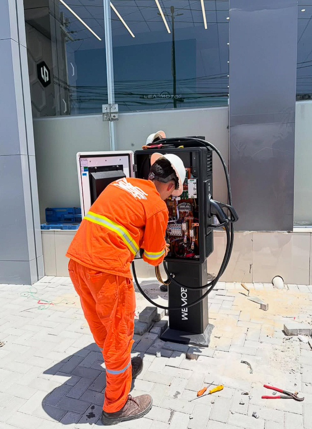
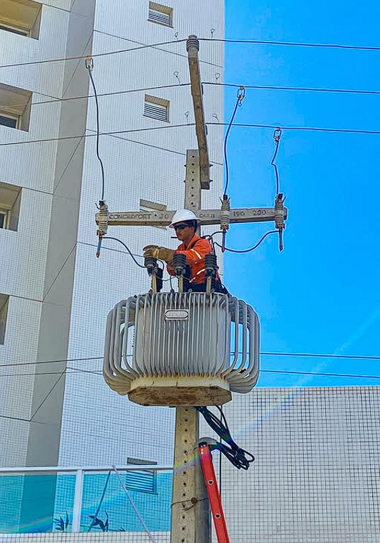
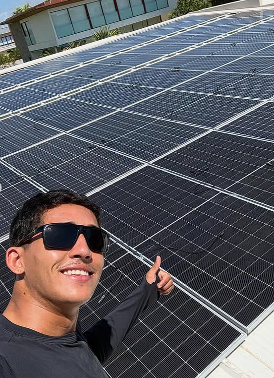
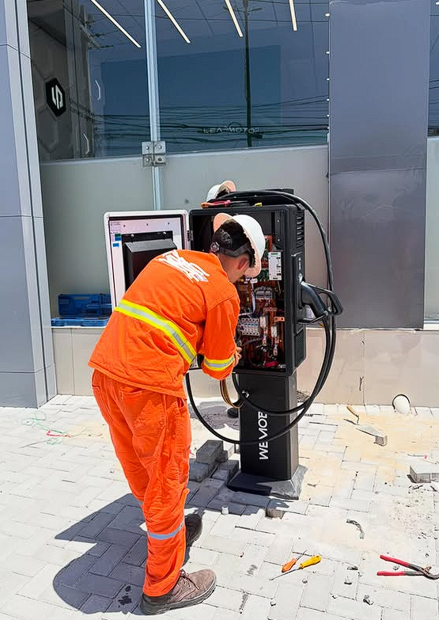
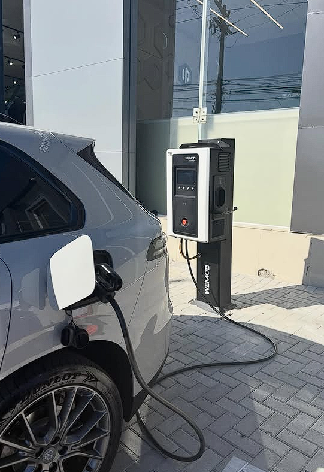
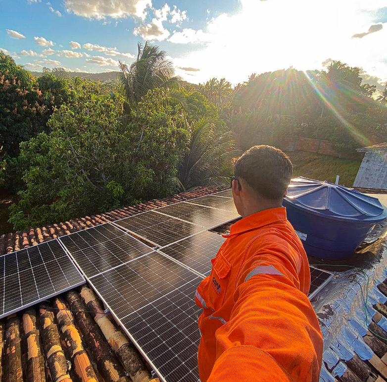
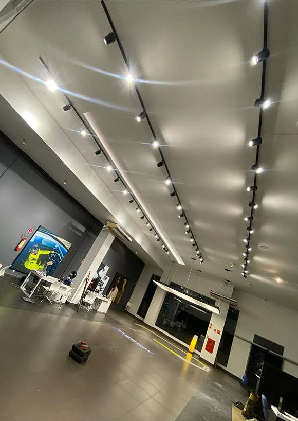
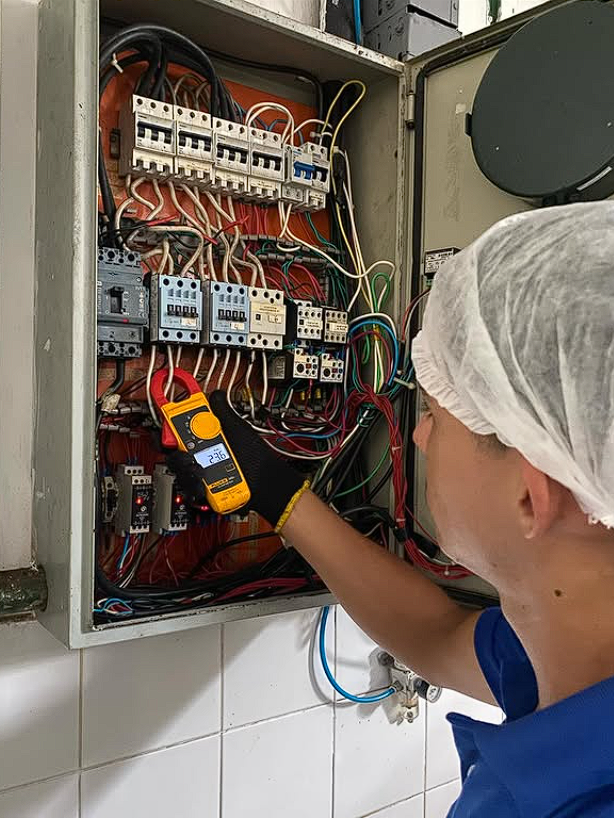
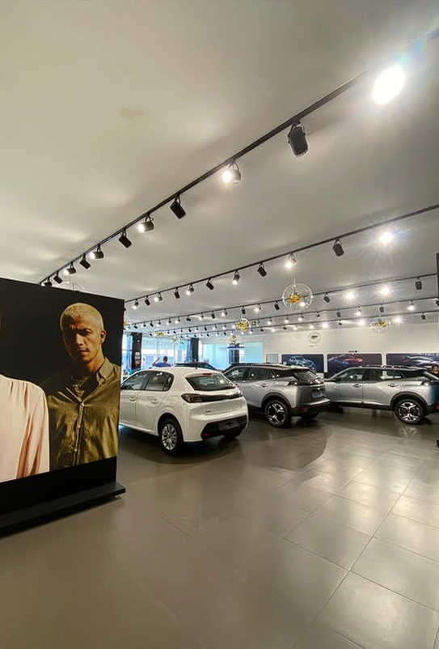

.png)
Segurança e precisão técnica para sua instalação.
Técnico em Eletrotécnica com mais de 2 anos de experiência sólida em Aracaju e região.
Residencial
Manutenções, quadros e iluminação com segurança total.
Comercial
Instalações, padronização e dimensionamento de carga.
Energia Solar
Instalação e manutenção de sistemas fotovoltaicos.
AutoCAD
Projetos elétricos, plantas e diagramas técnicos.

Perfil Profissional
Sou Caio Verde, técnico formado em Eletrotécnica, com mais de 3 anos de experiência. Minha atuação é voltada principalmente para a prática de campo, executando serviços elétricos com qualidade, segurança e eficiência, utilizando o AutoCAD como ferramenta complementar no desenvolvimento de projetos.
Possuo experiência em instalações elétricas residenciais e comerciais, instalação e manutenção de quadros de distribuição (QDC), motores elétricos, carregadores para veículos elétricos e manutenção de sistemas fotovoltaicos. Também atuo na elaboração de plantas elétricas e na implementação de sistemas de Energia Solar, sempre seguindo as normas NBR 5410 e NR-10.
Projetista
Instalador
Portfólio








Serviços Especializados
🏠 Elétrica Geral
- Instalação e manutenção de Quadros (QDC)
- Instalações Residenciais e Comerciais
- Manutenção de painéis solares
- Instalações de carregadores veiculares
- Instalações de Motores Elétricos
📐 Projetos & Solar
- Plantas elétricas em AutoCAD
- Instalação de sistemas Fotovoltaicos
- Projetos de sistemas fotovoltaicos
Vamos fechar seu orçamento?
Atendimento rápido em Aracaju, São Cristóvão, Nossa Senhora do Socorro e regiões próximas.